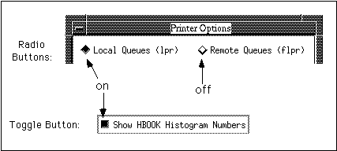

Histo-Scope utilizes the OSF/Motif windowing environment. This section gives an overview of the graphical user interface. For additional information, refer to the OSF/Motif User's Guide. Users familiar with OSF/Motif can probably skip this section.
Whenever you move the mouse, the pointer on your screen moves correspondingly. When this guide tells you to "point to" something, it simply means move the mouse until the pointer on your screen is positioned over the "something". The mouse buttons enable you to perform the following actions:
* "Click" means press and release a button without moving the pointer.
* "Double-click" means click a button twice in rapid succession.
* "Drag" means press and hold a button while moving the pointer.
Figure 1. Motif Window Controls
Before a window can receive input from you, it must be selected as the active window. To select a window, point to any part of the window and click the left (select) button on the mouse.[3]
Dragging the title bar of a window will move the entire window.
Clicking the minimize button will change the window to an icon. (To restore the icon back into a window, point to the icon and double-click the select button.)
The window menu button is used to display or "pull-down" the window menu. It allows the following functions:
All Motif windows contain the window controls described above. Histo-Scope uses the Motif Application Controls described below.
Figure 2. Motif Application Controls Used by Histo-Scope
The Histo-Scope Main window has a menu bar across the top of the window (just below the title bar). Each word in the menu bar represents a pull-down menu, which is displayed by pulling down on the menu bar with the mouse. To choose a function, you can use either of the following two methods:
* Drag Method: Point to the word for the menu you want to display, press and hold the select mouse button to display the menu, drag the pointer to highlight the desired function, and then release the button.
* Click Method: Point to the word for the menu you want to display, click the select button once to display the menu, point to the desired function, and then click again.
If you decide you don't want to execute a function after the menu is displayed, point away from the menu (so that no function is highlighted), and then release or click the select button.
Menus and their functions can also be accessed without using the mouse. Instead, a key combination can be typed. This is helpful when you don't want to move your hand from the keyboard to the mouse and for experienced users familiar with Histo-Scope's menu items.
* A mnemonic allows you to select a menu which has one of its letters underlined. To select that menu, press the Alt [4] key while typing the letter that is underlined. For example to pull down the File/Process menu, type Alt F.
After pulling down the File/Process menu, you can select one of the items in it by typing the letter that is underlined in that item. For example, to choose Open Histo-Scope File, type O.
* An accelerator key for most of the menu items inside of a pull-down menu is listed next to the item. Just type that key when the window containing that menu has keyboard focus to perform the desired function. For example, to Open Histo-Scope File, type Ctrl O (hold down the control key while you type O).
When a menu item cannot be selected, its name is greyed out (the name looks very light). Greying-out is also used for other controls (like list boxes and pull-down menus) when they cannot be selected. This is usually the case when the function that the control performs does not make sense in the current context or state of the window.
Pull-down menus outside of the menu bar work in a similar fashion. These menus typically appear as text outlined by a box containing a square menu button. When you click on the pull-down menu, the menu pops up over the box.
Figure 3. A Pull-down Menu
A list of items are often enclosed in a list box. List boxes can be used just for display purposes or can allow for selection of an item in a list. Histo-Scope lists are constrained to select only one item from a list at a time. To select an item in the list, do one of the following:
* Point to the item and click the select mouse button,
* Or, use the up- and down-arrow keys to move the highlight to the item to select
After selecting an item in a list, another control, a push button, is used to perform an action on the list item. Alternatively, double-clicking an item will perform the default action on that item.
A push button is a control that causes an immediate action when pressed. To press a push button, point to it and then click the select button. Push buttons can direct Histo-Scope to perform a desired function or pop up another window for your interaction with a related set of functions. If a push button has a dark frame outside and around it, typing <Return> is equivalent to clicking the mouse to select the push button. In addition to window-specific push buttons such as Open and View, Histo-Scope uses standard push button labels for the following common functions:
OK causes Histo-Scope to apply any changes you made in the window and dismiss it.
Apply applies any changes you made in the window without dismissing the window.
Reset cancels any changes you made to application controls in the window and resets their contents to the window's initial state (when it was popped up).
Cancel closes the window without performing any changes you made since the window popped up or the Apply button was pressed. The state of the window will be the same as if you hadn't changed anything.
Dismiss just makes the window disappear without affecting its contents or state.
Whenever a Histo-Scope list box is too small to hold all the items that need to be displayed, scroll bars allow you to control what portion is displayed. Scroll bars usually reside at the right edge (for vertical control) or bottom (for horizontal control) of a box. Each scroll bar has an arrow at each end, and a rectangular slider in the middle. The slider represents the current (relative) position of the displayed portion of the screen and the size of the displayed area in relation to the total area that can be displayed. When the slider is moved, that portion of the screen represented by the slider is displayed. The action of the display as it moves is called scrolling. There are three ways to scroll items and move the slider:
* Using the arrow buttons - point to the arrow that points toward the direction you want the slider to move; press and hold the select button until Histo-Scope displays the portion you want to see. This scrolls line by line (for the vertical scroll bar) or by "column" (horizontal scroll bar).
* Using the slider - grab the slider and move it where you want it. The portion of the screen represented by the slider is displayed.
* Using the space between the slider and an arrow button - click on the space between the slider and one of the arrow buttons. The text will scroll one "page" in the direction of the arrow. Pressing and holding the select button will scroll page by page until you release the button.

Figure 4. Toggle Buttons
A toggle button is used to set and indicate a condition to be on or off. When a toggle button appears "in" (or filled with shadow) the button is "on". When the toggle button appears "out" (or full of light) the button is "off". To change the state of the toggle button, just click on it with the select button of the mouse. There are two kinds of toggle buttons: A radio button is diamond shaped and is always part of a set. Only one of the radio buttons in the set can be on at a time. Choosing another radio button in the set clears the button that was previously on. A regular toggle button, sometimes called a check button, is square shaped and is independently on or off as set by the user.
In the Connect To Process and Scaling Variables dialog boxes, text areas are provided for input and/or display of text. To type into an input text area, point to it with the mouse and click[5] the select button before typing. The I-shaped cursor indicates the typing position. You can use the <Backspace>, <Delete>, and arrow keys inside text fields for editting your input.
Histo-Scope was designed to display messages to alert you to important conditions or errors. These messages "pop up" over the window you're currently using and typically block you from doing anything with Histo-Scope until you to acknowledge the message. To do this, just click on the appropriate push button inside the message window.
Figure 5. A Typical Error Message